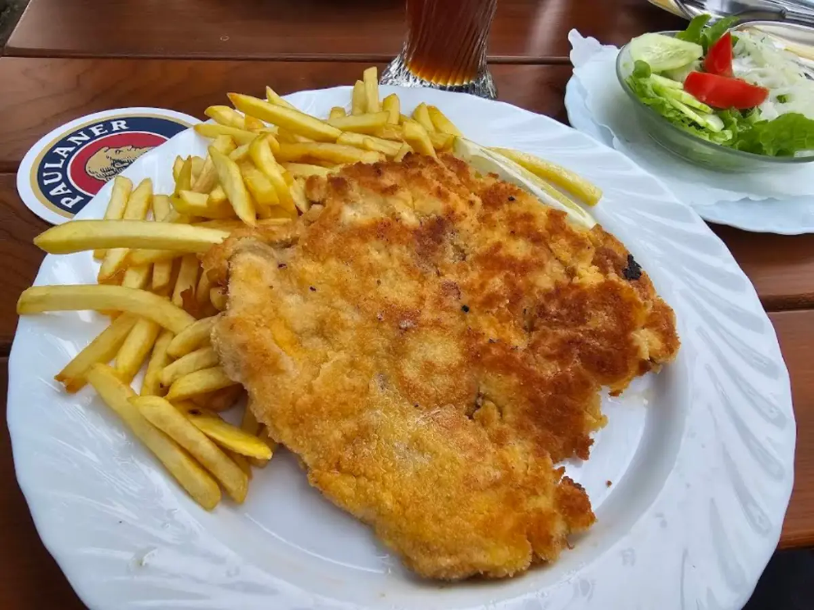

Bayerisches Wirtshaus · Rathausplatz 1, Germering
Gutes Essen, großzügig serviert – drinnen im Holz, draußen im Biergarten.
Herzhafte bayerische Küche, große Portionen und ein frisch gezapftes Paulaner. Setzen Sie sich rein in die warme Stube oder raus unter die alten Bäume.
- Geöffnet
- Di–So 11:30–22:00 Uhr · Montag Ruhetag
- Hier sind wir
- Rathausplatz 1, 82110 Germering
